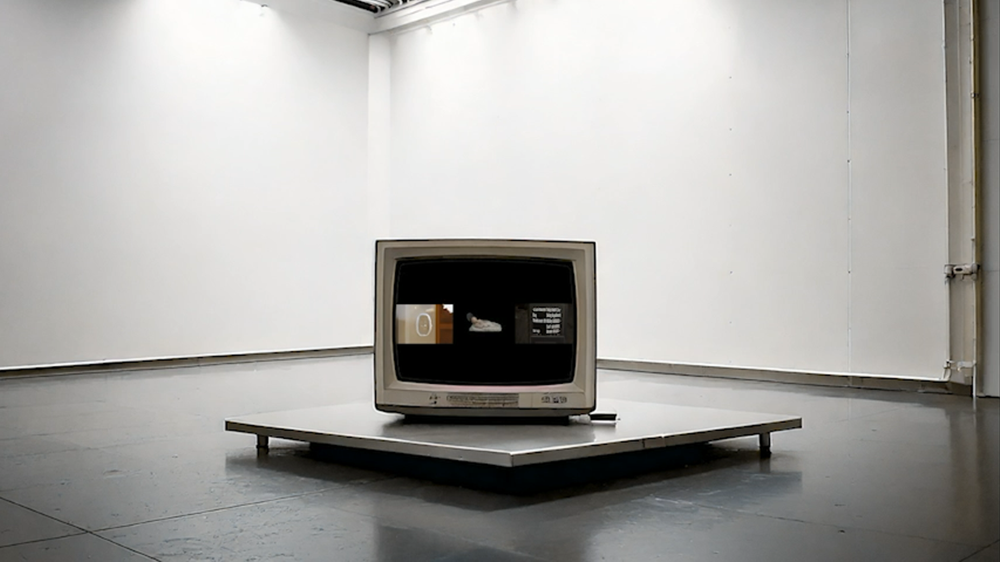
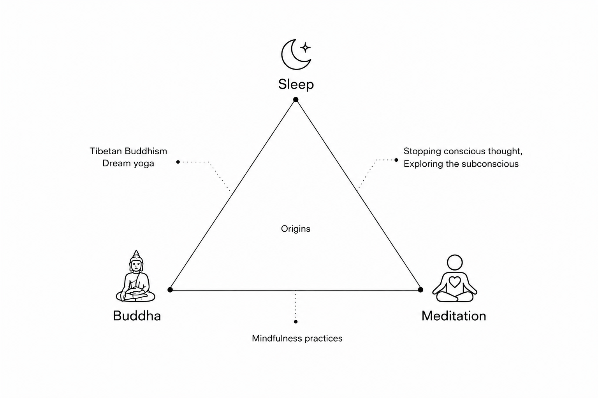
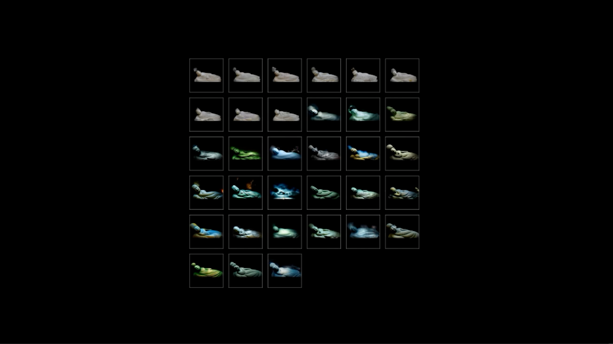
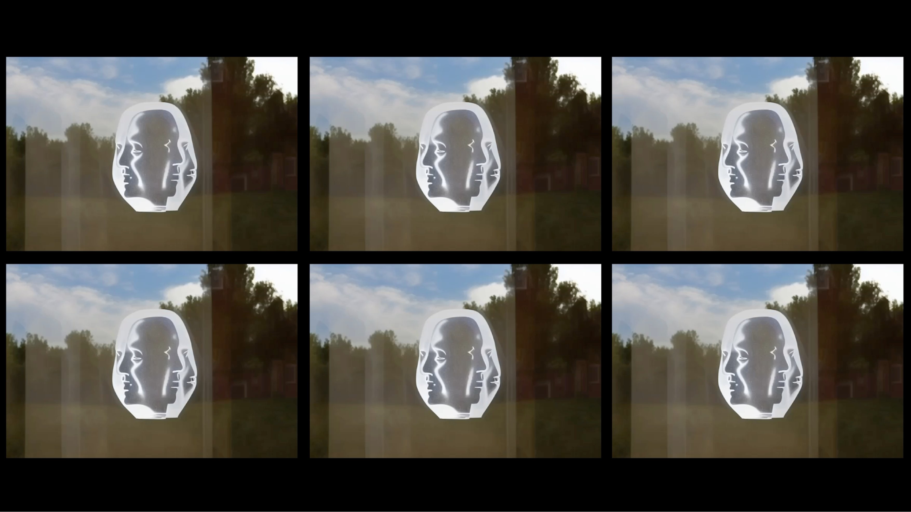
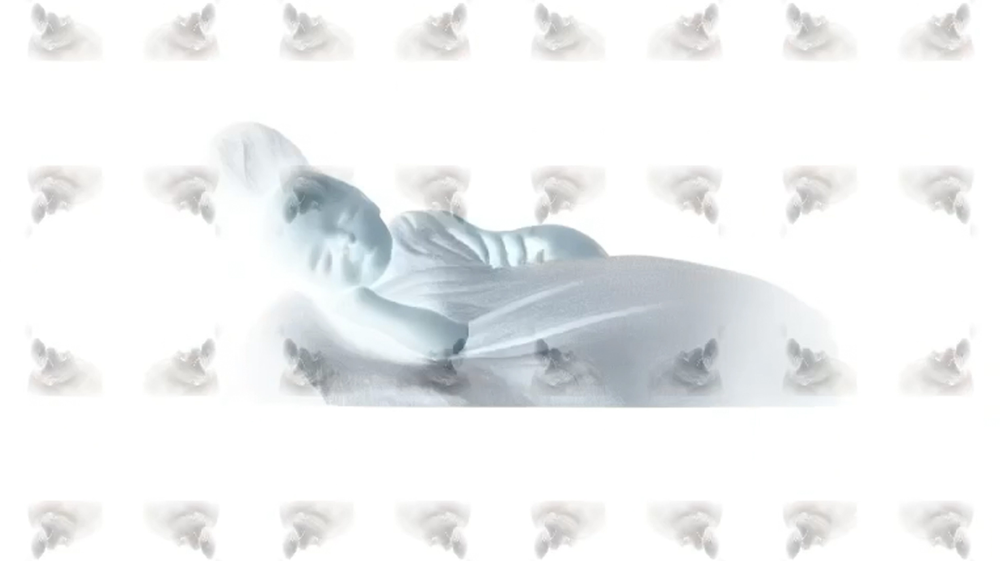

(re)generative life is a data-driven AI video that uses personal sleep data to question productivity, self-optimization, and the value of rest.
Concept / Data Mapping / AI Video Direction / Visual Composition / Editing
AI Video / Sleep Data / 3D Renders / Generative Visuals / Exhibition
Stable Diffusion / TouchDesigner / Max / Video Editing / Sleep Tracking

Sleep is often treated as unproductive within systems of efficiency and self-optimization. As tracking technologies become more widespread, rest becomes something to document, measure, and control.
This project uses personal sleep data to generate a fragmented video, questioning the modern obsession with productivity while emphasizing the balance between generation and regeneration.
The project connects sleep, meditation, and Buddhist mindfulness practices as ways of entering states beyond ordinary conscious thought. This research informed the visual language of rest, regeneration, and subconscious experience.

Personal sleep patterns, sleep quality, and dream records were collected through tracking devices. The data was used to modulate the intensity of visual distortion, translating rest into a moving image system.
Original 3D renders and motion sequences were processed through Stable Diffusion, then layered with additional effects in TouchDesigner and Max.


The resulting video transforms rigid tracking data into a fragmented visual narrative. Rather than presenting sleep as passive inactivity, the work frames rest as a generative and regenerative state.

The video was presented as a screen-based work, extending personal sleep data into a spatial viewing experience.